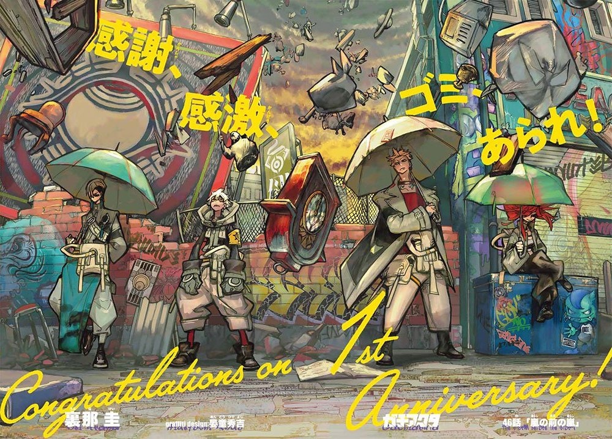

Gachiakuta is a manga created by Kei Urana. It started publication in early 2022. It currently has around 150+ chapters and the art is really cool to look at. I started reading it around the time it started to come out and as an early reader it's something that i would recommend to people who are new and old to manga reading. The anime is also an easy way to get into it as well and the voice actors for both dubs are great. If i had to pick a favorite character it would be between Fu, Jabber, Zodyl, Momoa, Rudo,Remlin, or Enjin.
I also really liked the one shots the creator made before they made this series i hope they get put into the story somehow -_-
Here's a link to the official website for more information
Gachiakuta :D